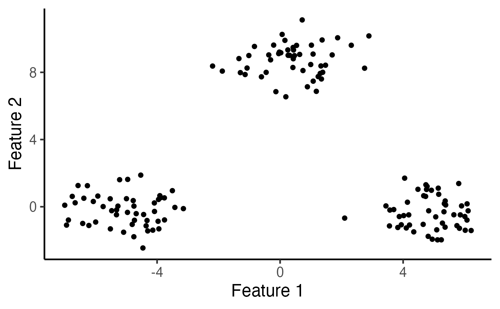
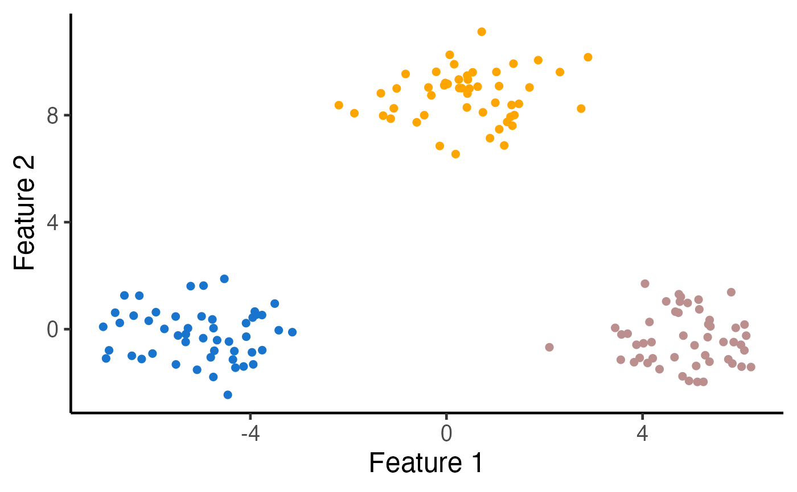

kmeans_estimation.RdPerform k-means clustering on a data matrix.
kmeans_estimation(
X,
k,
iter.max = 10,
seed = 1234,
tol_eps = 1e-04,
verbose = TRUE
)Numeric matrix; \(n\) by \(q\) matrix of observed data
Integer; the number of clusters for k-means clustering
Positive integer; the maximum number of iterations allowed in the k-means clustering (Lloyd's) algorithm.
Default to 10.
Random seed for the initialization in k-means clustering algorithm.
Returns a list with the following elements: "cluster" = cluster_assign_list, "centers" = centroid_list,
final_cluster Estimated clusters via k-means clustering
centers A matrix of the cluster centroids.
objective The objective function at the final iteration of the k-means algorithm.
The data given by X are clustered by the k-means clustering, which aims to partition the points into k groups such that the sum of squares from points to the assigned cluster centers is minimized. In other words, the k-means clustering solves the following optimization problem $$ \sum_{k=1}^K \sum_{i \in \mathcal{C}_k} \left\Vert x_i - \frac{\sum_{i \in \mathcal{C}_k} x_i}{|\mathcal{C}_k|} \right\Vert_2^2 , $$ subject the constraint that \(\mathcal{C}_1,..., {\mathcal{C}_K}\) forms a partition of the integers \(1,..., n\). The algorithm from Lloyd (1957) (also proposed in MacQueen (1967)) is used to produce a solution.
Lloyd, S. P. (1957, 1982). Least squares quantization in PCM. Technical Note, Bell Laboratories. Published in 1982 in IEEE Transactions on Information Theory, 28, 128–137.
MacQueen, J. (1967). Some methods for classification and analysis of multivariate observations. In Proceedings of the Fifth Berkeley Symposium on Mathematical Statistics and Probability, pp. 281–297. Berkeley, CA: University of California Press.
library(KmeansInference)
library(ggplot2)
set.seed(2022)
n <- 150
true_clusters <- c(rep(1, 50), rep(2, 50), rep(3, 50))
delta <- 10
q <- 2
mu <- rbind(c(delta/2,rep(0,q-1)),
c(rep(0,q-1), sqrt(3)*delta/2),
c(-delta/2,rep(0,q-1)) )
sig <- 1
# Generate a matrix normal sample
X <- matrix(rnorm(n*q, sd=sig), n, q) + mu[true_clusters, ]
# Visualize the data
ggplot(data.frame(X), aes(x=X1, y=X2)) +
geom_point(cex=2) + xlab("Feature 1") + ylab("Feature 2") +
theme_classic(base_size=18) + theme(legend.position="none") +
scale_colour_manual(values=c("dodgerblue3", "rosybrown", "orange")) +
theme(legend.title = element_blank(),
plot.title = element_text(hjust = 0.5))

k <- 3
# Run k-means clustering with K=3
estimated_clusters <- kmeans_estimation(X, k,iter.max = 20,seed = 2021)$final_cluster
table(true_clusters,estimated_clusters)
#> estimated_clusters
#> true_clusters 1 2 3
#> 1 0 50 0
#> 2 0 0 50
#> 3 50 0 0
# Visualize the clusters
ggplot(data.frame(X), aes(x=X1, y=X2, col=as.factor(estimated_clusters))) +
geom_point(cex=2) + xlab("Feature 1") + ylab("Feature 2") +
theme_classic(base_size=18) + theme(legend.position="none") +
scale_colour_manual(values=c("dodgerblue3", "rosybrown", "orange")) +
theme(legend.title = element_blank(), plot.title = element_text(hjust = 0.5))
